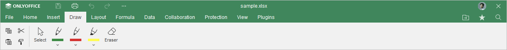
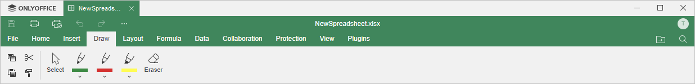

Kartica Draw
Kartica Draw u Spreadsheet Editor-u omogućava korisnicima obavljanje osnovnih operacija crtanja.
Odgovarajući prozor Online Spreadsheet Editor-a:

Odgovarajući prozor Desktop Spreadsheet Editor-a:

Pomoću ove kartice možete:
- koristiti alat za selekciju za promenu veličine ili brisanje natpisa, crteža ili isticanja,
- koristiti alat olovke i markera za crtanje ili dodavanje rukom pisanih beleški i isticanja,
- koristiti alat gumice za uklanjanje celokupnog crteža ili rukom pisanog teksta,